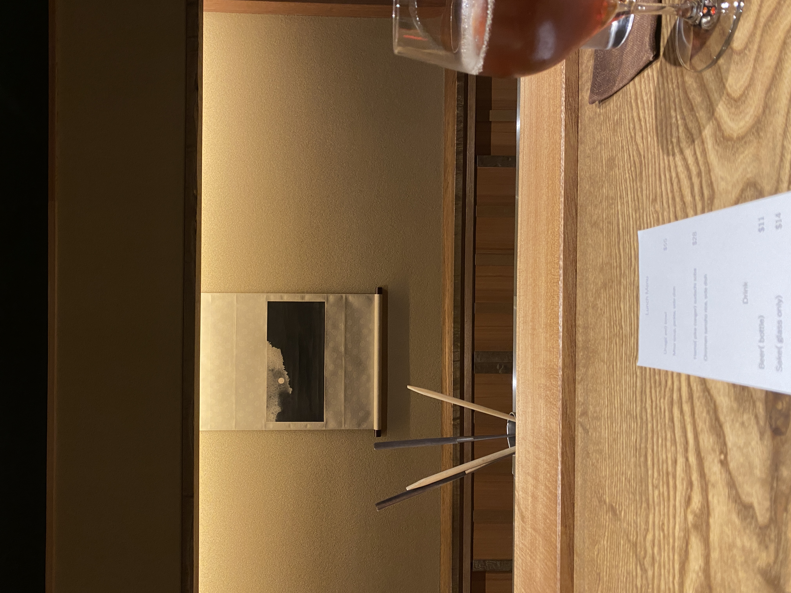

singlepatient's page
bio
CS and art background. Projects and hobbies. Sketches are worth a gander?
projects:
subless (in progress!)

This fork of asbplayer is focused on helping Japanese language learners improve the automaticity of their audio word recognition and surface form breakdown skills while engaging with subtitled target language content. Hopefully this helps to establish a strong foundation for audio comprehension. I built this to address the "cheating" I would do when watching subtitled content - which has its own benefits of improving your reading skills. Study mode is toggle-able, though, so no worries!
I'm taking a bit of an audio first or higher audio priority approach here. Audio vocabulary is critical for native level comprehension, so I wanted to aid with more deliberate testing of audio recognition when immersing. Most times people are left to self-assess and self-regulate their recognition and engagement with the content the consume. I realized this bit of automated gamification helps to keep me engaged with the content, and suprisingly the interruptions are a great deal more fun then annoying!
Basic Anki-integrated testing works at the moment and going from Yomitan's to Kuromoji's tokenizer has much improved the "correctness" of surface form breakdowns. Sentences and words are selected based on Anki maturity. However, smarter word and morpheme recognition success rate based sentence selection and testing are coming!
P.S. This uses the kuromoji morphological analyzer in the background, but I may be upgrading it to sudachi for better support for modern and colloquial language. Or perhaps I might add another dictionary...
forklore proof of concept

A menu-based semantic search engine for traditional restaurants. For long-tail searches of regional foods with more abstract search terms where language barrier and lack of human labeled information might pose a problem. I called it "bitechain" in the repo, but I think "forklore" is a better name.
arbisui: Sui DEX Arbitrage Bot
Not a crypto person, I promise. This was a contained problem to solve. No hoodwinking or speculating involved. A fairly basic arbitrage bot for a newer chain. The heavy lifting was in working around the lack of developer support for facilitating arbitrage. Was perhaps one of the first arbitrage bots on chain. I did, however, lack the fundamentals needed to push further and stay competitive. More details in the repo.
Move Bytecode to Expansion AST Converter
A dive into the stages of Move compilation and prover model building.
Anheuser Busch Freight Rerouter
Team project to automate consolidation and rerouting of shipments. Private repo so no link.
simple doohickies:
- OpenTable Experience Reservation Bot
- Gained some familiarty with reverse engineering APIs and automating payments.
- SankoChain New Pair Sniper Bot
- Very basic new-pair sniper bot for a new EVM chain. Was only viable for the first hours of existence. Vulnerable to exploitative bots.
skills + familiar tech:
- Rust:
- more than proficient
- wrote arbisui and other bots in this
- C++:
- proficient
- Sui Move:
- proficient
- wrote the transaction scripts for arbisui in this
- due to writing the Bytcode to AST Converter, have a decent understanding of Move compilation.
- Sui Stack:
- familiar in terms of interacting with the chain
- wrote custom tooling for the Rust client to allow transaction chaining
- wrote parsing tools for Sui data
- JavasScript/TypeScript:
- proficient-ish
- React:
- proficient-ish
- Tauri (Rust, React):
- proficient-ish
- JSON-RPC:
- enough to interact with it
- heavily utilized in arbisui (transaction endpoint)
- GraphQL:
- enough to query
- used in a upgraded version of arbisui in a private repo and the Opentable Experience Reservation Bot
familiar domains-ish:
- reservation botting + checkout:
- API Reverse Engineering
- web scraping
- automating checkout processes
- Web3 & the like:
- implemented client side versions of Uni V2 & V3 for arbitrage simulation and volume optimization purposes
- deep-ish Sui knowledge
- fairly decent knowledge of general trading basics given the arbitrage bot
- will disclaim that I am not a fan of the scene
also:
- InDesign
- PhotoShop
- Clip Studio Paint
- Krita
Though none to a professional level.
current interests:
- Learning about learning:
- Justin Skycak:
- This gave me a lot of insight into the learning traps I kept falling into (all of them). I think it's probably quite useful as a supplementary guide to character-building, too. Hoping to focus my interests and build them from the foundations up.
- Justin Skycak:
- Immersion learning Japanese:
- TheMoeWay:
- Opinionated immersion guide. The 30 day start is rough if you aren't extremely motivated, persistent, or well put together. I found progressively building habits to be helpful. Anki, with its well-defined small task progressions with immediate feedback, is a great anchor habit to first establish. Immersion and sentence mining is where the real challenge begins. You have to hang in there until your grammer and vocabulary provides enough of a foundation to recognize new words in context. Some guides stress simply watching what you are interested in regardless of difficulty, but watching or listening to anything where I can understand the bulk of what is being said has been more engaging for me than a show I should be interested in. I find that being "interested" in the topic doesn't necessarily work as an anchor.
- donkuri: Opinionated immersion guide similar to the above.
- ajatt: Also an opinionated immersion guide. So far, I disagree about the uselessness of audio cards - there's quite a bit of literature about phonological traces providing the strongest foundation for building vocabulary on top of. It's also something I observed in my own learning. I can better map orthographic (like kanji) representations of a word to their meaning if I first know a word phonologically (by sound) first. Learning the phonological and orthographic representations simultaneously tended to result in much worse recall. I do believe that they should be used alongside orthogrpahical sentence cards, however. This is super unscientific though, and these guys have much more experience than I do.
- jimaku: jp subtitles
- TheMoeWay:
- Makgeolli Brewing:
- Takjoo Journals: There's a PDF primer on brewing here I started my first brew with.
- Moon & Lion Brewing: Another blog! One of the earliest English language ones.
- Jeff Rubidge: Brewing out of Brooklyn. A lot experimentation here and still uploading. Early cameos from folk who have their own breweriew now (Hana, Yunguna).
- Baekusang Makgeolli: Based in Korea but provides English language content. Some techniques I haven't heard of. Opening a Shopify store for nuruk, soon!
- Food:
- FoodTalkCentral:
- Mostly Los Angeles food scene. Can be biased towards the whale agenda. Some occassional squabbling. Steadily contributed to.
- sushilog:
- Japnese language sushi blog. Worth popping into a translator (which will do funky things like literally translating "nigiri" to "grip", so be wary). Often very early to spots. Dead-on tabelog score projections (kind of an interesting concept). Leans traditional edomae in tastes though suprisingly open to fusion (but more so if it eschews piling luxury ingredients for something less expected like Thai flavors). Suspect about the sushi bubble. Champions good value. Also covers other fine dining to a lesser degree.
- jd.514:
- Co-owner of Sushi Nishinokaze (西の風 - West Wind) in Montreal and fish/caviar distributor and so on. Educational and opinionated on food and pottery. Eats bear paws if that puts you off. Talks about crab biology and how stress affects flavor - that sort of thing.
- The industrialization and homogenization of Korean food:
- Koreans still made soy sauce at home for decades after Japan and China deferred to industrial practices (the methods of making soy sauce were more conducive to them and were better done at scale), and even after the industrial soy sauce became available. However, now the majority of korean soy sauce contains hydrolyzed vegetable proteins while japan managed to phase them out of their soy sauces (for the most part). Effects can be seen in alcohols, too! Can look to different rates of industrialization and development, occupation, and the war.
- Korean Traditional Knowledge Portal: For older agricultural + food knowledge. Many variations of doenjang. Also a lot of regional foods.
- Mike Colameco's Real Food show: When you're exploring a restaurant scene it's good to explore what it was like before your time. It's all chefs talk about on podacasts.
- eating in translation: Lovely for tracking traditional food events and eateries in New York.
- culinary backstreets: Among the least gatekeep-y food tour sites out there. Folks pop up on the Roads and Kingdoms podcasts - though those drone on a bit.
- everycountryfood: In the name, really.
- eattheworldnyc and eattheworldla: Jared Cohee does excellent work.
- eat something new in queens: Also in the name.
- woobo farms: Cultivator of Korean heritage rice varieties (availability greatly reduced due to history). Uses snails in place of pesticide.
- FoodTalkCentral:
- Tea Bowls (not so much anymore - was a bit of LARPing episode but was fun):
- I took a particular interest in Korean-influenced ceramics for a bit.
- <3:
- Robert Yellin's Yakimono Blog: Well fleshed out and rare English language source on modern Japanese potters.
- Misao's Art World: Ceramics: Japanese language blog summary of ceramics + author's favorite pieces.
restaurants i want to visit:
- This six seat Sicilian restaurant in Osaka
- Sushi Komari. Tokyo. Chef is a fish broker - utilizes unloved fish. Barely gets any sleep.
- Beba in Montreal. Ari Schor is a singular king.
- etc.
things im looking forward to:
- Lunch at jo nyc
- update: was awesome
